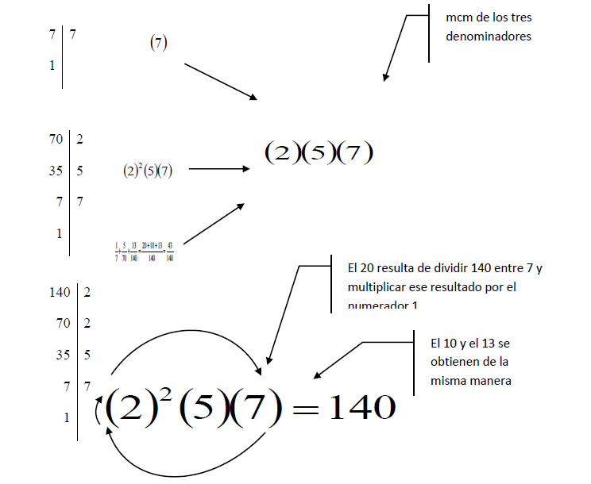
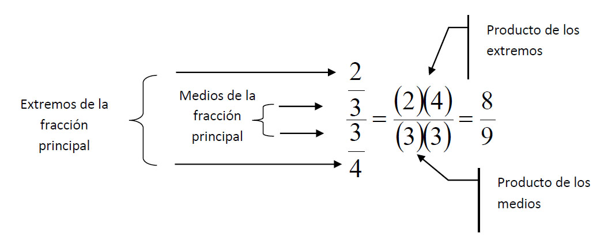

Suma y resta de números fraccionarios
Cuando se suman números fraccionarios pueden presentarse los siguientes casos:
-
Suma de fracciones con igual denominador:
Para sumar fracciones con igual denominador se suman los numeradores, conservando en
mismo denominador
Ejemplo:
\frac{3}{4} + \frac{2}{4} + \frac{1}{4} = \frac{3 + 2 + 1}{4} = \frac{6}{4}
-
Suma de fracciones con distinto denominador:
Para sumar fracciones con distinto denominador se procede como sigue:
- Se calcula en primer lugar el mínimo común múltiplo (mcm) de los denominadores. Este será el denominador común.
- Se divide el denominador común entre el denominador de la primera fracción y el resultado se multiplica por el numerador correspondiente. Se coloca el número obtenido en el numerador de la fracción resultante.
- Se repite el paso anterior hasta la última fracción.
- Se suman los números obtenidos en los pasos 2 y 3.
- La fracción resultante se forma de la suma obtenida en el paso 4 (numerador) y el mcm (denominador).
Ejemplo \frac{1}{7} + \frac{5}{70} + \frac{13}{140}

Suma de números mixtos
Si en una suma de fracciones aparecen números mixtos, se convierten a fracciones impropias y se procede como en los casos anteriores.
Ejemplo:
2\frac{1}{2} + 3\frac{2}{5} + 4\frac{1}{8} + \frac{1}{4} = \frac{7}{3} + \frac{17}{5} +\frac{33}{8} + \frac{1}{4} = ?
Multiplicación de fracciones
Para multiplicar una fracción por otra, se multiplica numerador y denominador por denominador
Ejemplo:
(\frac{3}{4})(\frac{1}{5}) = \frac{(3)(1)}{(3)(20)} = \frac{3}{20}
Multiplicación de números mixtos
Para multiplicar fracciones mixtas, se convierten las fracciones mixtas a fracciones impropias y se procede como en el caso anterior.
Ejemplo:
(5\frac{1}{4})(3\frac{5}{2}) = (\frac{21}{4}) (\frac{11}{2}) = \frac{231}{8}
División de fracciones
La operación de división de fracciones se puede representar de diferentes formas. Puede emplearse los símbolos: ó \div .otra forma es representándola como una fracción de fracciones.
Ejemplos:
a) \frac{2}{3} \div \frac{3}{4} =
b) \frac{\frac{2}{3}}{\frac{3}{4}}
Para el primer caso (independientemente de que se empleen los símbolos de división) existen dos formas de resolver la operación:
-
Se efectúa el “producto cruzado”:
\frac{2}{3} \div \frac{3}{4} = \frac{(2)(4)}{(3)(3)} = \frac{8}{9}
-
Se invierte la segunda fracción y se efectúa la operación de multiplicación:
\frac{2}{3} \div \frac{3}{4} = (\frac{2}{3})(\frac{4}{3}) = \frac{8}{9}
En el caso de la fracción entre fracciones, se multiplican entre sí los extremos (numerador de la fracción de arriba y denominador de la de abajo). Lo mismo se hace con los medios (denominador de la fracción de arriba y numerador de la de abajo. El primer valor es el numerador de la fracción resultante. El segundo es el denominador.

División con números mixtos
Para dividir números mixtos, se convierten los números mixtos a fracciones impropias y se procede como en el caso anterior.
Ejemplo:
\frac{\text{ }4\frac{2}{3}\text{ }}{\text{ }5\frac{3}{4}\text{ }} = \frac{\text{ }\frac{14}{3}\text{ }}{\text{ }\frac{23}{4}\text{ }} = \frac{56}{69}
Guía de Evaluación al ingreso de la Educación Superior Tecnológica 2004
314 palabras
Ejercicios
1.
¿Cuál es el resultado al realizar la siguiente operación? \frac{7}{12} + \frac{1}{4} + \frac{3}{8}
- A. \frac{5}{8}
- B. \frac{11}{24}
- C. \frac{5}{12}
- D. \frac{29}{14}
1.
¿Cuál es el resultado al realizar la siguiente operación? \frac{4}{9} \times \frac{2}{5} \times 3\frac{2}{7}
- A. \frac{16}{315}
- B. \frac{48}{315}
- C. \frac{80}{315}
- D. \frac{184}{315}
1.
¿Cuál es el resultado al realizar la siguiente operación?
[3 \{ (2 - 5)^2 - 4( \frac{3}{2} - \frac{10}{4} )^3 \} + 3(\frac{7}{9})] - \sqrt{49}
- A. \frac{40}{3}
- B. \frac{103}{3}
- C. \frac{166}{3}
- D. \frac{169}{3}